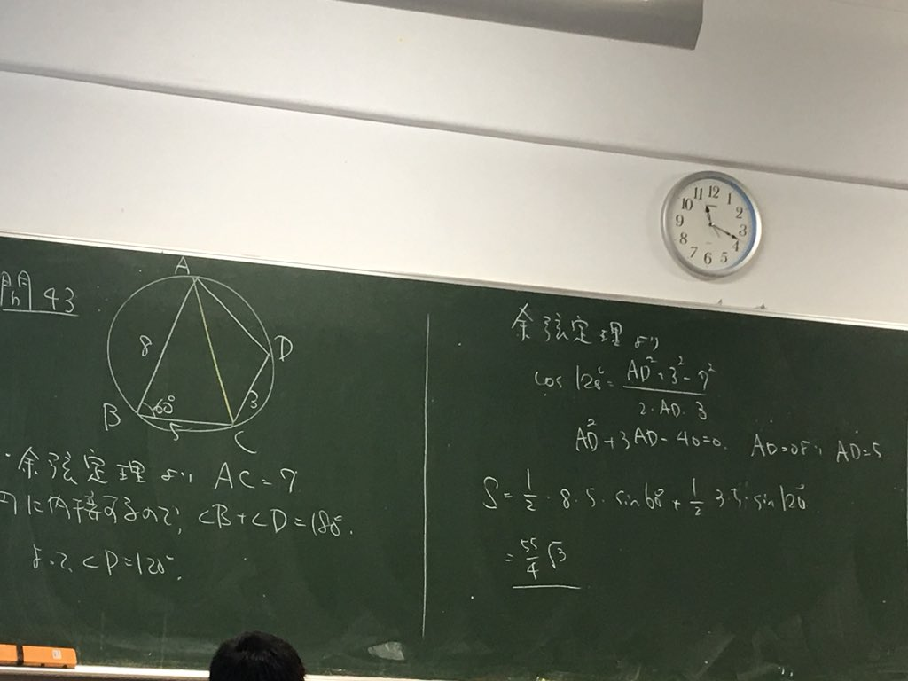
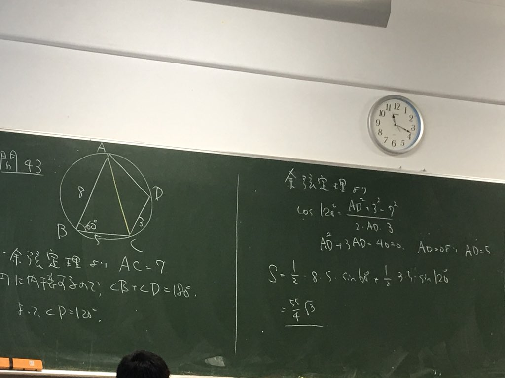

このページについて
このページは数学βの黒板の画像をまとめるためのものです。 このページに載せることに同意していただける場合は、 私のtwitterアカウント @unaoya にリプライまたはDMで写真を送ってください。 個人名、顔などが見えないように加工したのち公開します。
問43
このページは数学βの黒板の画像をまとめるためのものです。 このページに載せることに同意していただける場合は、 私のtwitterアカウント @unaoya にリプライまたはDMで写真を送ってください。 個人名、顔などが見えないように加工したのち公開します。
問43
